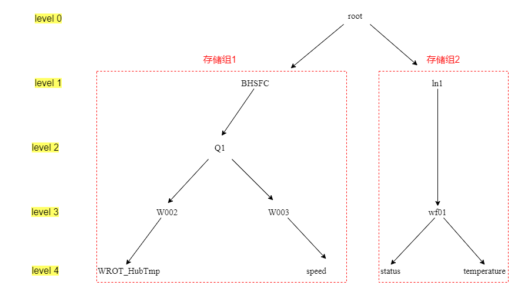

对于求和、求平均数这种计算，如果先查出来数值再计算会麻烦，IoTDB提供了内置的聚合函数，使用聚合函数一次查询即可，即聚合查询，可以很快得到结果。
查询单条时间序列
要查询导入的CSV测试数据一共有多少行，可输入SQL语句：
select count(WROT_HubTmp) from root.BHSFC.Q1.W002
输出结果如下：
IoTDB> select count(WROT_HubTmp) from root.BHSFC.Q1.W002
+-------------------------------------+
|count(root.BHSFC.Q1.W002.WROT_HubTmp)|
+-------------------------------------+
| 13834|
+-------------------------------------+
Total line number = 1
可以使用通配符*简化查询语句，等价于上面这条语句：
select count(*) from root.**.W002
在路径中表示一层，*表示一层或多层。
我们同样可以使用通配符*查询写入的SQL语句一共有多少行，SQL语句如下：
select count(*) from root.**.W003
显示如下：
IoTDB> select count(*) from root.**.W003
+-------------------------------+
|count(root.BHSFC.Q1.W003.speed)|
+-------------------------------+
| 1|
+-------------------------------+
Total line number = 1
查询多条时间序列
也可以一次查询多条时间序列，输入的SQL语句为（已使用通配符简化输入的字符）：
select count(*) from root.**
输出结果为写入的两条时间序列的名称和行数：
IoTDB> select count(*) from root.**
+-------------------------------------+-------------------------------+
|count(root.BHSFC.Q1.W002.WROT_HubTmp)|count(root.BHSFC.Q1.W003.speed)|
+-------------------------------------+-------------------------------+
| 13834| 1|
+-------------------------------------+-------------------------------+
Total line number = 1
内置聚合函数
上面使用的count查询即是一个聚合函数，IoTDB内置的聚合函数有：
| 函数名 | 功能 |
|---|---|
| SUM | 求和 |
| COUNT | 计算数据点数 |
| AVG | 求平均值 |
| EXTREME | 求具有最大绝对值的值。如果正值和负值的最大绝对值相等，则返回正值 |
| MIN_VALUE | 求最小值 |
| FIRST_VALUE | 求时间戳最小的值 |
| LAST_VALUE | 求时间戳最大的值 |
| MAX_TIME | 求最大时间戳 |
| MIN_TIME | 求最小时间戳 |
单层聚合查询
例如我们要查询导入的测试数据中的最大值，SQL语句可为：
select MAX_VALUE(*) from root.BHSFC.Q1.W002
输出结果为：
IoTDB> select MAX_VALUE(*) from root.BHSFC.Q1.W002
+---------------------------------------+
|EXTREME(root.BHSFC.Q1.W002.WROT_HubTmp)|
+---------------------------------------+
| 22.39999|
+---------------------------------------+
Total line number = 1
求测试数据的平均值，输入的SQL语句为：
select AVG(*) from root.BHSFC.Q1.W002
输出结果为：
IoTDB> select AVG(*) from root.BHSFC.Q1.W002
+-----------------------------------+
|AVG(root.BHSFC.Q1.W002.WROT_HubTmp)|
+-----------------------------------+
| 17.683083226110213|
+-----------------------------------+
Total line number = 1
聚合查询+时间过滤
我们也可以对一段时间内的数据进行聚合查询，例如查询1月13日之后的数据总数：
select count(*) from root.BHSFC.Q1.W002 where time > 2022-01-13T00:00:00
查询1月12至1月13之间的数据总数：
select count(*) from root.BHSFC.Q1.W002 where time <= 2022-01-13T00:00:00 and time > 2022-01-12T00:00:00
两次查询的输出结果为：
IoTDB> select count(*) from root.BHSFC.Q1.W002 where time > 2022-01-13T00:00:00
+-------------------------------------+
|count(root.BHSFC.Q1.W002.WROT_HubTmp)|
+-------------------------------------+
| 9985|
+-------------------------------------+
Total line number = 1
It costs 0.007s
IoTDB> select count(*) from root.BHSFC.Q1.W002 where time <= 2022-01-13T00:00:00 and time > 2022-01-12T00:00:00
+-------------------------------------+
|count(root.BHSFC.Q1.W002.WROT_HubTmp)|
+-------------------------------------+
| 3030|
+-------------------------------------+
Total line number = 1
It costs 0.007s
分层聚合查询
我们可以使用 GROUP BY LEVEL = INT 语句来对某一层级下的序列进行聚合查询。group by子句可以将查询结果分组，并按照group by 子句中指定的聚合函数表达式返回查询结果。
这里我们重温一下测试数据和我们创建的数据的层级：

如果我们查询level2层级中的数据点个数，可以这样写SQL语句：
select count(*) from root.** group by level = 2
输出结果如下：
IoTDB> select count(*) from root.** group by level = 2
+--------------------+--------------------+
|count(root.*.Q1.*.*)|count(root.*.wf01.*)|
+--------------------+--------------------+
| 13835| 2|
+--------------------+--------------------+
Total line number = 1
分层聚合查询还可以用于对某一层级下同名的序列，例如我们有root.BHSFC.Q1.W002.speed序列，假如还有多条名为speed的序列，如root.ln2.wf01.speed,root.ln2.wf02.speed,root.ln2.wf03.speed等等，如果需要统计所有speed 序列的数据点数，SQL语句为：
select count(speed) from root.** group by level = 3
由于这里没有创建这些序列所以就不演示了，但这个操作非常方便，一句简单的SQL语句就能查询不同设备采集的同一物理量。
分段聚合查询
分段聚合是一种时序数据典型的查询方式，当我们按照一定的时间间隔进行聚合计算，比如计算每天的平均气温，就可以将气温的序列按天进行分段，然后计算每段的平均值。
我们通过 GROUP BY 子句指定按照时间区间分段聚合。例如查询测试数据中1月14号的平均风速，SQL语句为：
select AVG(*) from root.BHSFC.Q1.W002 group by ([2022-1-14T00:00:00,2022-1-15T00:00:00),1d)
括号左开右闭代表计算时包含1月14号零点的数据，不包含1月15号零点的数据。输出结果如下：
IoTDB> select AVG(*) from root.BHSFC.Q1.W002 group by ([2022-1-14T00:00:00,2022-1-15T00:00:00),1d)
+-----------------------------+-----------------------------------+
| Time|AVG(root.BHSFC.Q1.W002.WROT_HubTmp)|
+-----------------------------+-----------------------------------+
|2022-01-14T00:00:00.000+08:00| 17.880594558648433|
+-----------------------------+-----------------------------------+
Total line number = 1
不仅单个时间序列可以进行时间区间分段聚合查询，多元时间序列可以，例如我们可以查询1月11号到1月15号间每天前三小时内风速speed的数量和风速的最大值，SQL语句如下：
select count(speed),max_value(WROT_HubTmp) from root.BHSFC.Q1.* group by ([2022-1-11T00:00:00,2022-1-15T00:00:00),3h,1d)
输出结果为：
IoTDB> select count(speed),max_value(WROT_HubTmp) from root.BHSFC.Q1.* group by ([2022-1-11T00:00:00,2022-1-15T00:00:00),3h,1d)
+-----------------------------+-------------------------------+-----------------------------------------+
| Time|count(root.BHSFC.Q1.W003.speed)|max_value(root.BHSFC.Q1.W002.WROT_HubTmp)|
+-----------------------------+-------------------------------+-----------------------------------------+
|2022-01-11T00:00:00.000+08:00| 0| null|
|2022-01-12T00:00:00.000+08:00| 0| 18.2|
|2022-01-13T00:00:00.000+08:00| 0| 18.8|
|2022-01-14T00:00:00.000+08:00| 0| 18.39999|
+-----------------------------+-------------------------------+-----------------------------------------+
Total line number = 4
因为我们此前只往speed写入了一个值，不包含在1月11日到144日这段时间内，所以这段时间内speed都没有值，统计的数据点数为0。而1月11日0点到3点的时间区间内也风速也没有值，所以max_value(root.BHSFC.Q1.W002.WROT_HubTmp)这一栏为null。
降采样查询
降采样查询是指使用比数据采集的时间频率更低的频率进行的一种查询方式，是分段聚合的一种特例。例如，数据采集的频率是一秒，想按照1分钟对数据进行展示，则需要使用降采样查询。
在IOTDB中可以通过 GROUP BY 子句指定聚合的时间间隔和滑动步长实现，样式为group by([startTime, endTime), time_window, sliding_step)，其中time_window是聚合的时间窗口大小，sliding_step是时间窗口的滑动步长。
例句一：查询风机2022年1月11号到15号每天的最高风速：
select max_value (*) from root.BHSFC.Q1.W002 group by ([2022-1-11T00:00:00,2022-1-15T00:00:00),1d)
例句二：查询风机2022年1月11号到15号每天上午的平均风速：
select avg(*) from root.BHSFC.Q1.W002 group by ([2022-1-11T00:00:00,2022-1-15T00:00:00),12h,1d)
例句三：每隔半天统计1月11号之后0点到6点的平均风速：
select avg(*) from root.BHSFC.Q1. W002 group by ([2022-1-11T00:00:00,2022-1-15T00:00:00),6h,12h)
上述例句的输出结果如下：
IoTDB> select max_value (*) from root.BHSFC.Q1.W002 group by ([2022-1-11T00:00:00,2022-1-15T00:00:00),1d)
+-----------------------------+-----------------------------------------+
| Time|max_value(root.BHSFC.Q1.W002.WROT_HubTmp)|
+-----------------------------+-----------------------------------------+
|2022-01-11T00:00:00.000+08:00| 18.7|
|2022-01-12T00:00:00.000+08:00| 21.1|
|2022-01-13T00:00:00.000+08:00| 20.2|
|2022-01-14T00:00:00.000+08:00| 22.39999|
+-----------------------------+-----------------------------------------+
Total line number = 4
It costs 0.014s
IoTDB> select avg(*) from root.BHSFC.Q1.W002 group by ([2022-1-11T00:00:00,2022-1-15T00:00:00),12h,1d)
+-----------------------------+-----------------------------------+
| Time|avg(root.BHSFC.Q1.W002.WROT_HubTmp)|
+-----------------------------+-----------------------------------+
|2022-01-11T00:00:00.000+08:00| 14.475876229508224|
|2022-01-12T00:00:00.000+08:00| 16.913640732526957|
|2022-01-13T00:00:00.000+08:00| 17.04472683120057|
|2022-01-14T00:00:00.000+08:00| 16.626656189856803|
+-----------------------------+-----------------------------------+
Total line number = 4
It costs 0.010s
IoTDB> select avg(*) from root.BHSFC.Q1. W002 group by ([2022-1-11T00:00:00,2022-1-15T00:00:00),6h,12h)
+-----------------------------+-----------------------------------+
| Time|avg(root.BHSFC.Q1.W002.WROT_HubTmp)|
+-----------------------------+-----------------------------------+
|2022-01-11T00:00:00.000+08:00| 14.263634545454543|
|2022-01-11T12:00:00.000+08:00| null|
|2022-01-12T00:00:00.000+08:00| 16.590661805896843|
|2022-01-12T12:00:00.000+08:00| 19.916664648437486|
|2022-01-13T00:00:00.000+08:00| 16.908698723897892|
|2022-01-13T12:00:00.000+08:00| 18.385164558333372|
|2022-01-14T00:00:00.000+08:00| 16.478693331408735|
|2022-01-14T12:00:00.000+08:00| 20.17386738693474|
+-----------------------------+-----------------------------------+
Total line number = 8
分层+分段聚合查询
前面分层聚合中我们提到了对同名序列的查询，在分段聚合中我们也可以查询所有同名的序列，例如如果不同存储组、不同设备的序列我都命名为WROT_HubTmp，如root.BHSFC.Q2.W003.WROT_HubTmp,root.ln2.wf01.WROT_HubTmp...那么统计2022年1月11日至15日内所有设备下名叫WROT_HubTmp的序列每天的数据最大值，其SQL语句为：
select max_value(WROT_HubTmp) from root.** group by ((2022-1-11T00:00:00,2022-1-15T00:00:00],1d), level=3
空值填充
数据传输很容易产生空值，IoTDB的查询提供了前值、线性和特定值填充三种方法来填补空值。
前值填充
IoTDB中可以使用前一个数据的值来填充此条数据。测试数据中此前在最新值查询中查到了最后一个数据的时间为2022年1月15日06:46:40的数据，这之后的数据就没有了，假如我查询在这之后的时间如2022年1月16日00:00:00的数据，用前一个数据的值填充，SQL语句为：
select WROT_HubTmp from root.BHSFC.Q1.W002 where time = 2022-01-16T00:00:00 fill(previous)
返回结果为：
IoTDB> select WROT_HubTmp from root.BHSFC.Q1.W002 where time = 2022-01-15T23:00:00 fill(previous)
+-----------------------------+------------------------------+
| Time|root.BHSFC.Q1.W002.WROT_HubTmp|
+-----------------------------+------------------------------+
|2022-01-15T23:00:00.000+08:00| 16.0|
+-----------------------------+------------------------------+
Total line number = 1
可以看到这个时间点的值与前一个时间点的值相同。
我们可以指定前值的时间范围，例如空值的时间点为2022年1月15日06:46:40，我们查询2022年1月15日06:47:00的数据，且想要填充数值位于空值前一分钟内，SQL语句为：
select WROT_HubTmp from root.BHSFC.Q1.W002 where time = 2022-01-15T06:47:00 fill(previous,1m)
返回结果为：
IoTDB> select WROT_HubTmp from root.BHSFC.Q1.W002 where time = 2022-01-15T06:47:00 fill(previous,1m)
+-----------------------------+------------------------------+
| Time|root.BHSFC.Q1.W002.WROT_HubTmp|
+-----------------------------+------------------------------+
|2022-01-15T06:47:00.000+08:00| 16.0|
+-----------------------------+------------------------------+
Total line number = 1
如果不指定范围，则默认为无穷大，找到前值为止。如果前一个时间点为空，那么填充指令返回的结果也为空，例如我们的前值范围限定在48分的前一分钟， 那里没有数值，则返回null，如下所示：
IoTDB> select WROT_HubTmp from root.BHSFC.Q1.W002 where time = 2022-01-15T06:48:00 fill(previous,1m)
+-----------------------------+------------------------------+
| Time|root.BHSFC.Q1.W002.WROT_HubTmp|
+-----------------------------+------------------------------+
|2022-01-15T06:48:00.000+08:00| null|
+-----------------------------+------------------------------+
Total line number = 1
线性填充
在降采样查询中我们有这样一个例句，每隔半天统计1月11号至1月15日0点到6点的平均风速：
select avg(*) from root.BHSFC.Q1. W002 group by ([2022-1-11T00:00:00,2022-1-15T00:00:00),6h,12h)
返回结果为：
IoTDB> select avg(*) from root.BHSFC.Q1. W002 group by ([2022-1-11T00:00:00,2022-1-15T00:00:00),6h,12h)
+-----------------------------+-----------------------------------+
| Time|avg(root.BHSFC.Q1.W002.WROT_HubTmp)|
+-----------------------------+-----------------------------------+
|2022-01-11T00:00:00.000+08:00| 14.263634545454543|
|2022-01-11T12:00:00.000+08:00| null|
|2022-01-12T00:00:00.000+08:00| 16.590661805896843|
|2022-01-12T12:00:00.000+08:00| 19.916664648437486|
|2022-01-13T00:00:00.000+08:00| 16.908698723897892|
|2022-01-13T12:00:00.000+08:00| 18.385164558333372|
|2022-01-14T00:00:00.000+08:00| 16.478693331408735|
|2022-01-14T12:00:00.000+08:00| 20.17386738693474|
+-----------------------------+-----------------------------------+
可以看到第二行数据返回了null，是空值，因为那段时间内没有数据。我们可以用线性填充把这个值填上，SQL语句为：
select avg(*) from root.BHSFC.Q1. W002 group by ([2022-1-11T00:00:00,2022-1-15T00:00:00),6h,12h) fill (linear)
返回结果为：
IoTDB> select avg(*) from root.BHSFC.Q1. W002 group by ([2022-1-11T00:00:00,2022-1-15T00:00:00),6h,12h) fill (linear)
+-----------------------------+-----------------------------------+
| Time|avg(root.BHSFC.Q1.W002.WROT_HubTmp)|
+-----------------------------+-----------------------------------+
|2022-01-11T00:00:00.000+08:00| 14.263634545454543|
|2022-01-11T12:00:00.000+08:00| 15.427148175675693|
|2022-01-12T00:00:00.000+08:00| 16.590661805896843|
|2022-01-12T12:00:00.000+08:00| 19.916664648437486|
|2022-01-13T00:00:00.000+08:00| 16.908698723897892|
|2022-01-13T12:00:00.000+08:00| 18.385164558333372|
|2022-01-14T00:00:00.000+08:00| 16.478693331408735|
|2022-01-14T12:00:00.000+08:00| 20.17386738693474|
+-----------------------------+-----------------------------------+
可以看到空值已经被填充了，这个值是前值14.263634545454543和后值16.590661805896843的线性插值。
特定值填充
我们也可以用特定的常值进行填充，例如16号零点的数据都为空，希望显示为15，SQL语句为：
select WROT_HubTmp from root.BHSFC.Q1.W002 where time = 2022-01-16T00:00:00 fill(15)
返回结果为：
IoTDB> select WROT_HubTmp from root.BHSFC.Q1.W002 where time = 2022-01-16T00:00:00 fill(15)
+-----------------------------+------------------------------+
| Time|root.BHSFC.Q1.W002.WROT_HubTmp|
+-----------------------------+------------------------------+
|2022-01-16T00:00:00.000+08:00| 15.0|
+-----------------------------+------------------------------+